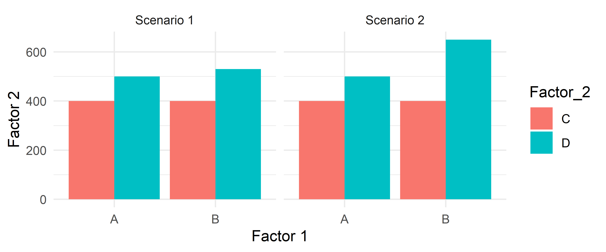
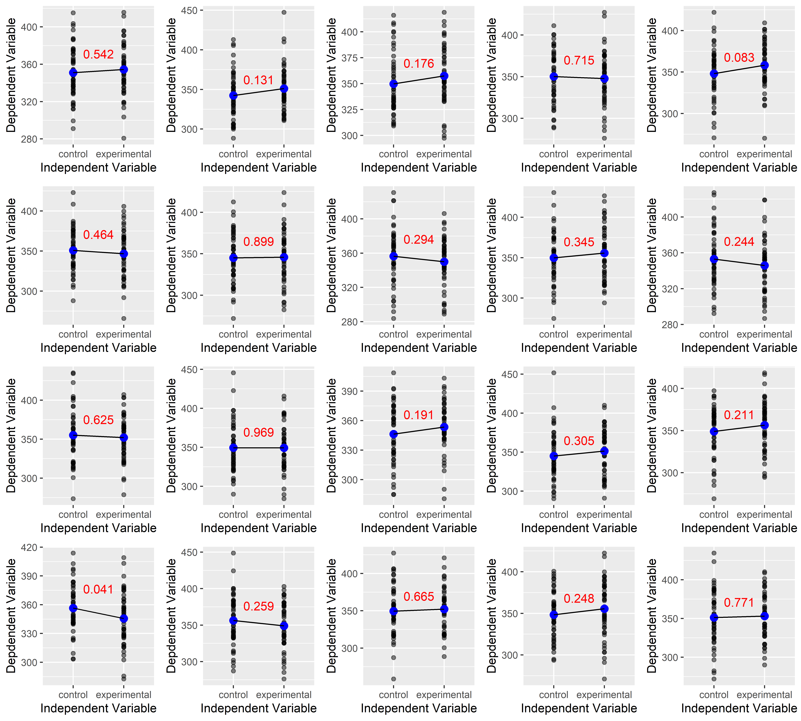
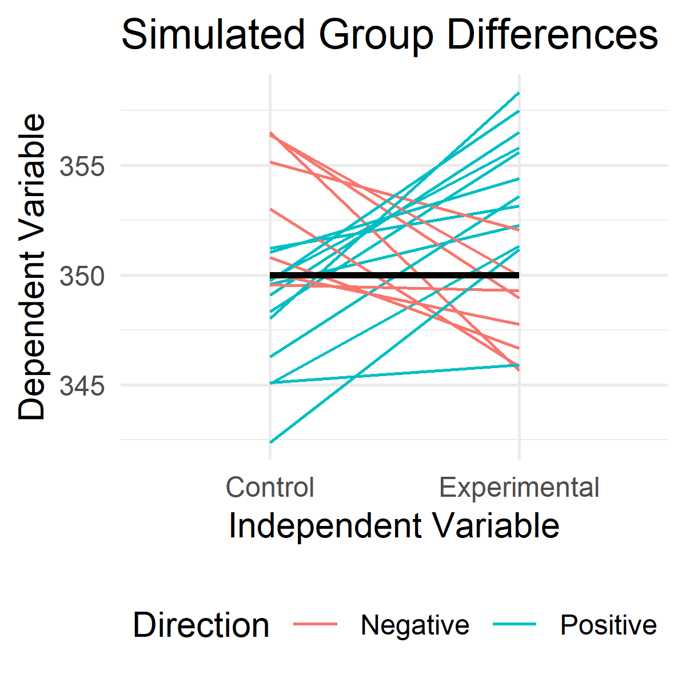
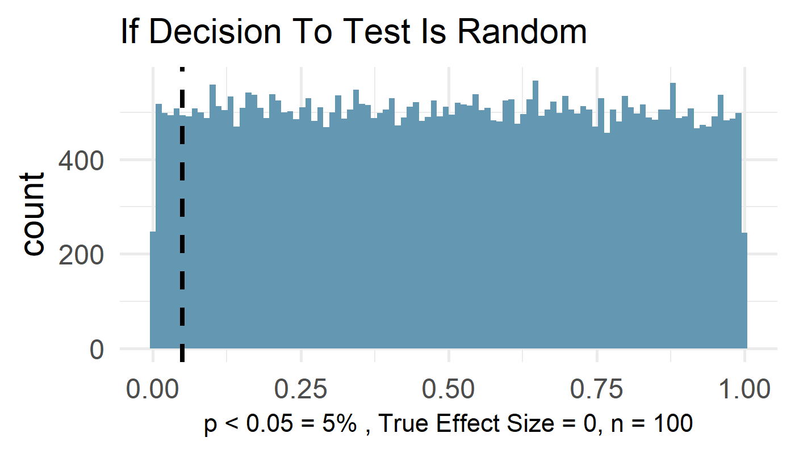
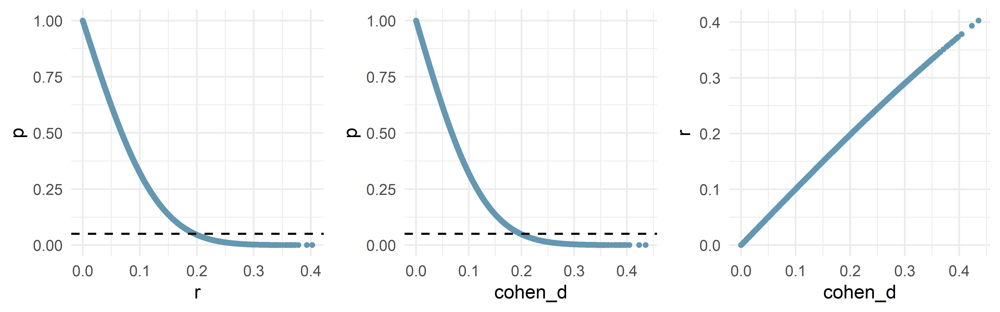
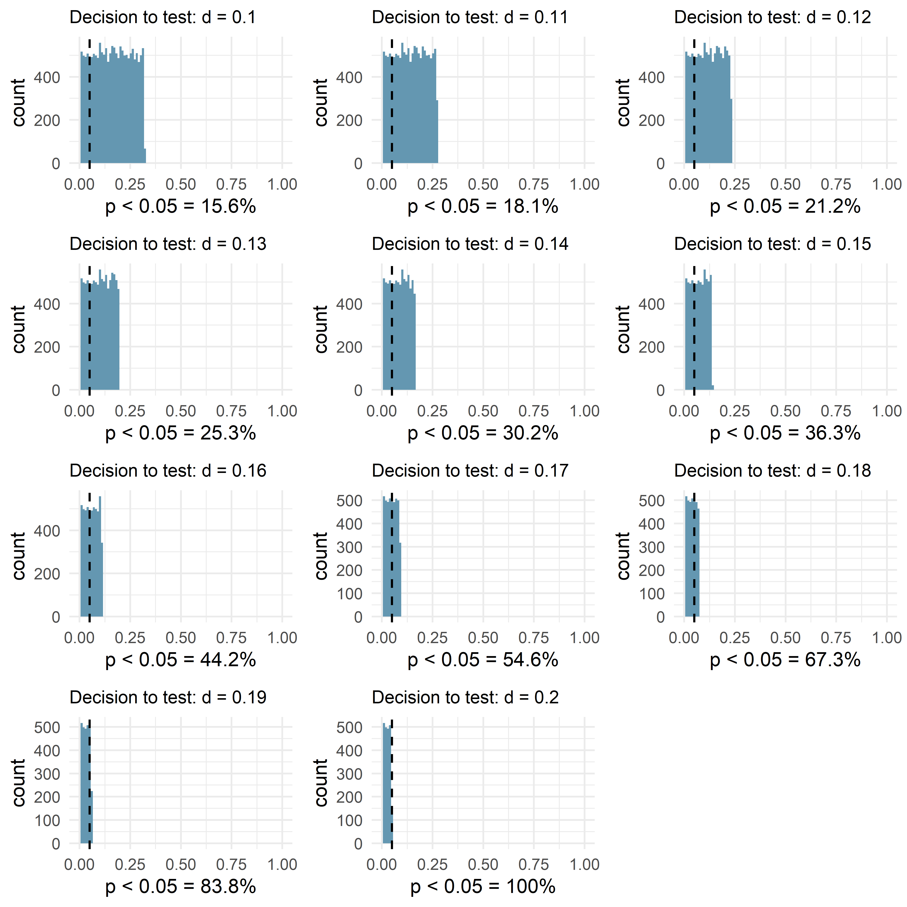

# load libraries
library(tidyverse)
library(tidyr)
library(lsr)
library(ggpubr)Why You Should Pre-specify Exploratory Analyses
Introduction
There are two general ways scientists approach exploratory data analysis. The first approach involves performing additional pre-specified analyses and reporting every analysis conducted. This is a good way to perform exploratory data analysis because every significance test is independent which ensures acceptable long-term error control. However, this method assumes the independent variables being tested were decided in advance, and that the decision to run a significance test was not dependent on how the data looked.
The second exploratory data analysis method is what scientists use most of the time. It is called the visual test. After running a hypothesized analysis, the scientist starts looking at associations not previously considered by breaking the data up many different ways, creating graphs of the data, and visually inspecting them. If the visual test provides any indication that their may be significant effects present, a follow-up significance test is performed. If there are no apparent differences based on the visual test, that comparison is discarded.
The issue with the visual test is that it changes the Type-I error rate in unpredictable ways, because the computed p-values are now dependent on whether they first pass the visual test.
Visually Exploring Data: An Example
Suppose you run an experiment and decide to look at associations not originally hypothesized. You decide to graph associations between additional factors to see whether their are any “hidden” interactions latent in the dataset. I can envision two scenarios:
# make a fake dataframe.
fake_data_df <- data.frame(
"Scenario" = rep(c("Scenario 1", "Scenario 2"), each = 4),
"Factor_1" = rep(c("A", "A", "B", "B"), times = 2),
"Factor_2" = rep(c("C", "D"), times = 4),
"Response" = c(400, 500, 400, 530, 400, 500, 400, 650)
)
# plot fake data.
ggplot(fake_data_df, aes(x = Factor_1, y = Response, group = Factor_2, fill=Factor_2)) +
geom_bar(position = position_dodge(), stat = "identity")+
facet_wrap(~Scenario) +
theme_minimal() +
xlab("Factor 1") +
ylab("Factor 2")
The test for an interaction in Scenario A does not pass the visual test and is discarded. The test for an interaction in Scenario B does pass the visual test and results in a subsequent significant test. The problem with Scenario B is that the decision to formally perform a signifance test was dependent on their being a large enough visual difference during the visual test. Next, I will run simulations to show why the visual test is invalid.
Simulate A Simple Experiment
There are several easy ways to simulate data. I am going to use a slightly more difficult approach, but I like this approach because it makes me think about the data generating process that gives rise to sample data. Below I am going to simulate the difference between two independent groups where the null hypothesis is actually true. This can be thought of as meaning either that 1) there is no difference between the two groups (bad way), or 2) both groups are sampled from the same population distribution (better way imo). Below I will first take you through the steps needed to run a simulation like this. After, I will run the actual simulation
How Does a Simulation Work?
This simulation will assume the null hypthesis is true. Therefore, there won’t be any difference between the groups at the population level. There may, however, be difference at the sample level. In fact, there almost always will be. Because I prefer linear regression, I will simulate data from a linear model:
\(Y_{i} \mid \beta_{0}, \beta_{1}, \sigma \sim N (\mu_{i}, \sigma^{2})\) with \(\mu_{i} = \beta_{0} + \beta_{1}X_{i}\)
However, because the slope will always be cancelled out by zero, this model can be simplified to this:
\(Y_{i} \mid \beta_{0}, \sigma \sim N (\mu_{i}, \sigma^{2})\) with \(\mu_{i} = \beta_{0}\)
First, I make an indicator for the independent variable. One group will have a zero, and the other a one. This also means the sample size is going to be n = 100.
x <- rep(c(0, 1), each = 50)
x [1] 0 0 0 0 0 0 0 0 0 0 0 0 0 0 0 0 0 0 0 0 0 0 0 0 0 0 0 0 0 0 0 0 0 0 0 0 0
[38] 0 0 0 0 0 0 0 0 0 0 0 0 0 1 1 1 1 1 1 1 1 1 1 1 1 1 1 1 1 1 1 1 1 1 1 1 1
[75] 1 1 1 1 1 1 1 1 1 1 1 1 1 1 1 1 1 1 1 1 1 1 1 1 1 1To make the dependent variable, one would need to add and multiply the model coefficients with the independent variable(s). That is what I will do here. No measurement is perfect though, so every sample will be measured with some error. I am simulating this error with the rnorm() function. Because there is no difference at the population level between the two groups, both groups are sampled from a normal distribution with a mean of 350 and a standard deviation of 30. To calculate the difference between groups, one would add a slope to the intercept. Here, the slope is zero and cancels out the influence of the independent variable.
set.seed(1234)
y <- rnorm(100, mean = 350, sd = 30) + 0*x
y [1] 313.7880 358.3229 382.5332 279.6291 362.8737 365.1817 332.7578 333.6010
[9] 333.0664 323.2989 335.6842 320.0484 326.7124 351.9338 378.7848 346.6914
[17] 334.6697 322.6641 324.8848 422.4751 354.0226 335.2794 336.7836 363.7877
[25] 329.1884 306.5539 367.2427 319.2903 349.5459 321.9215 383.0689 335.7322
[33] 328.7168 334.9623 301.1272 314.9714 284.5988 309.7702 341.1712 336.0231
[41] 393.4849 317.9407 324.3391 341.5813 320.1698 320.9446 316.7805 312.4404
[49] 334.2852 335.0945 295.8191 332.5377 316.7333 319.5511 345.1307 366.8917
[57] 399.4345 326.7994 398.1773 315.2657 369.6977 426.4697 348.9572 329.9110
[65] 349.7719 403.3125 315.8418 391.0348 389.8869 360.0942 350.2068 336.3359
[73] 339.0043 369.4486 412.1081 345.3980 308.2790 328.2925 357.7479 340.4882
[81] 344.6663 344.9002 308.8309 344.7864 375.5070 370.9283 366.4999 337.9180
[89] 344.2522 314.1642 348.4052 357.6559 401.1789 380.0454 335.1325 360.6665
[97] 315.9618 376.3461 379.1875 413.6335Now the data can be put in a dataframe
sim_df <- data.frame(x, y)
head(sim_df) x y
1 0 313.7880
2 0 358.3229
3 0 382.5332
4 0 279.6291
5 0 362.8737
6 0 365.1817Finally, a linear regression can be performed on the sample. Remember, their is no difference between the two groups at the pupulation level, but there almost certainlt will be differences at the sample level (due to sampling error).
model <- lm(y ~ x, data = sim_df)
summary(model)
Call:
lm(formula = y ~ x, data = sim_df)
Residuals:
Min 1Q Median 3Q Max
-58.367 -17.301 -3.815 15.830 86.067
Coefficients:
Estimate Std. Error t value Pr(>|t|)
(Intercept) 336.408 4.090 82.242 < 2e-16 ***
x 17.777 5.785 3.073 0.00274 **
---
Signif. codes: 0 '***' 0.001 '**' 0.01 '*' 0.05 '.' 0.1 ' ' 1
Residual standard error: 28.92 on 98 degrees of freedom
Multiple R-squared: 0.0879, Adjusted R-squared: 0.07859
F-statistic: 9.444 on 1 and 98 DF, p-value: 0.002743Above I can see the slope coefficient (x) is actually statistically significant. This is likely due to the dact that the Intercept estimate is so low. Both groups were sampled from the same distribution centered at 350. THe Intercept is 336, and the slope is 18. This means the mean of the second group is 336 + 18 = 354. In frequentist statistics, probabilities are conceptualized in reference to long-term frequencies. For instance, we know a fair coin has a 50% probability of coming up heads because if we flipped that coin a theoretically infinite number of times, approximately 50% of those flips would land heads. P-values can be thought of the same way: If you were to run the same experiment an infinite number of times, fixing the sample size and collecting a new sample with each experiment, how many p-values would be below your threshold (in most cases in science, the threshold is 0.05)? When the null hypothesis is true, only 5% of experiments will yield a p-value below 0.05.
A Closer Look At Several Simulations
Above we looked at one sample from our model. Let’s see what several simulations look like. Remember, the model is the process that generates our data. When we run an experiment, we are assuming that the model we fit the data to is the data generating process, and we are trying to estimate the real parameters from this process.
# model and simulation parameters ----------------------------------------------
set.seed(123)
temp_list <- list()
temp_df <- data.frame("simulation" = factor(),
"intercept" = numeric(),
"slope" = numeric(),
"p-value" = numeric())
# simulate experiments under the null
for (i in 1:20) {
# dummy coding for independent variable
iv <- rep(c(0, 1), each = 50)
# independent variable for ith simulation
dv <- rnorm(100, mean = 350, sd = 30) + 0*x
# dataframe with 100 observations for ith experiment
sim_df <- data.frame(iv, dv)
sim_df$iv <- ifelse(sim_df$iv == 0, "control", "experimental")
# perform linear regression for ith simulation
model <- lm(dv ~ iv, data = sim_df)
p_value <- summary(model)$coefficients[2, 4]
intercept <- summary(model)$coefficients[1,1]
slope <- summary(model)$coefficients[2,1]
temp_graph <- ggplot(sim_df, aes(x = iv, y = dv)) +
geom_point(alpha = 0.5) +
annotate(geom="point", x="control", y=intercept,color="blue", size = 3)+
annotate(geom="point", x="experimental", y=intercept + slope,color="blue", size = 3)+
annotate(geom="segment", x="control", xend = "experimental", y= intercept, yend=intercept + slope) +
xlab("Independent Variable") +
ylab("Depdendent Variable") +
annotate(geom="text", x=1.5, y=intercept + 20, label=round(p_value, 3), color="red")
temp_list[[i]] <- temp_graph
current_df <- data.frame("simulation" = as.factor(i),
"intercept" = intercept,
"slope" = (intercept + slope))
temp_df <- rbind(current_df, temp_df)
}
# Use do.call to pass all elements of temp_list to ggarrange with specified columns and rows
arranged_plots <- do.call(ggarrange, c(temp_list))
# Print or display the arranged plots
print(arranged_plots)
I have plotted all 20 simulations above and have included the p-value in red. Notice that one simulation has a p-value below 0.05. This is to be expected when the null hypothesis is true: If I were to run the same experiment many times changing only the sample each time, 5% of those experiments would yield statistically significant results when the null hypothesis is true.
There is another way to look at the output. Instead, it can be all plotted in a single figure, with the true model (null) plotted along with all of the sample coefficients.
temp_df$Direction <- ifelse(temp_df$intercept - temp_df$slope < 0, "Positive", "Negative")
temp_df1 <- pivot_longer(temp_df, cols = c("intercept", "slope"), names_to = "coefficient_names", values_to = "value")
temp_df1$coefficient_names <- as.factor(temp_df1$coefficient_names)
temp_df1$coefficient_names <- ifelse(temp_df1$coefficient_names == "intercept", "Control", "Experimental")
ggplot(temp_df1, aes(x = coefficient_names, y = value, group = simulation, color = Direction)) +
geom_line() +
theme_minimal() +
xlab("Independent Variable") +
ylab("Dependent Variable") +
ggtitle("Simulated Group Differences") +
geom_segment(aes(x = 1, y = 350, xend = 2, yend = 350), color = "black", size = 1) +
theme(legend.position = "bottom")
Above I have plotted the true difference between the Control and Experimental group in black. That difference is 0, so both means are 350. Each simulation was drawn from those groups, but with some error involved. The red and green lines represent the group differences for each simulation, and the colors represent whether the difference was positive or negative. One of those simulated differences was statistically significant, which is what we would expect under the null (i.e. that 5% of repeatitions of an experiment would yield statistically significant results when the null hypothesis is true).
Simulate 50000 Experiments Under The Null Hypothesis
Below I will repeat the above simulation 50,000 times. Each time I will record the p-value, r-square, and cohen’s d. These will be recorded for the slope coefficient.
# model and simulation parameters ----------------------------------------------
intercept <- 350
slope <- 0
simulations <- 50000
sample_size <- 100
# empty dataframe to fill in the loop
df <- data.frame("p" = numeric(),
"r" = numeric(),
"cohen_d" = numeric())
# simulate experiments under the null
for (i in 1:simulations) {
# dummy coding for independent variable
x <- rep(c(0, 1), each = sample_size/2)
# independent variable for ith simulation
y <- rnorm(sample_size, mean = intercept, sd = 30) + slope*x
# dataframe with 100 observations for ith experiment
sim_df <- data.frame(x, y)
# perform linear regression for ith simulation
model <- lm(y ~ x, data = sim_df)
# calculate ith p-value
p_value <- summary(model)$coefficients[2, 4]
# calculate ith r-square value
r <- sqrt(summary(model)$r.squared)
# calculate cohen's d for slope
cohen_d <- abs((summary(model)$coefficients[2, 1])/(sqrt(100) * summary(model)$coefficients[2, 2]))
# store values for ith experiment
temp <- data.frame("p" = p_value,
"r" = r,
"cohen_d" = cohen_d)
#
df <- rbind(temp, df)
}
# calculate power from simulation
type_I_error_rate <- (length(df[df$p <= 0.05, 1]))/simulations * 100# graph simulation results
ggplot(df, aes(x = p)) +
geom_histogram(bins = 100 , fill = "#6497b1") +
geom_vline(xintercept = 0.05, linetype="dashed", color = "black", size = 0.7) +
theme_minimal() +
xlab(paste0("p < 0.05 = ", round(type_I_error_rate, 1), "%", " , True Effect Size = ", slope, ", n = ", sample_size)) +
ggtitle("If Decision To Test Is Random") +
theme(plot.title = element_text(size = 11),
axis.title.x = element_text(size = 8))
The histogram above displays the distribution of p-values from 50000 experiments where the null hypothesis is actually true. While counterintuitive, this demonstrates that p-values are randomly drawn from a uniform distribution when the null hypothesis is true. Approximately 5% of these p-values are below 0.05 which is logically consistent with the concept of Type-I errors: If there is no diference between two groups, we will incorrectly determine an effect exists no more than 5% of the time.
Below are 3 graphs, each plotting two variables from the simulation against each other.
ggarrange(
ggplot(df, aes(x = r, y = p)) +
geom_point(size = 1, color = "#6497b1") +
theme_minimal() +
geom_hline(yintercept = 0.05, linetype="dashed", color = "black", size = 0.6),
ggplot(df, aes(x = cohen_d, y = p)) +
geom_point(size = 1, color = "#6497b1") +
theme_minimal() +
geom_hline(yintercept = 0.05, linetype="dashed", color = "black", size = 0.6),
ggplot(df, aes(x = cohen_d, y = r)) +
geom_point(size = 1, color = "#6497b1") +
theme_minimal(),
nrow = 1)
Where Exploratory Analysis Can Go Wrong
I’m going to add a contingency to mimic how the type-I error rate changes when researchers look through their data and perform a significance test only when a difference looks large enough. Here’s how this works. Let’s suppose a researcher has a dataset where their are no real effects. They decide to look through their data by making plots and running a significance test only if they think the visual difference is large enough that the test might be statistically significant. Below I am going to take all of the data generated under the null hypothesis, and only check those that have a cohen’s d of 0.1 or higher. I will do this for 0.1 to 0.2 and plot the new p-value distribution.
temp_list <- list()
for (i in c(0.10, 0.11, 0.12, 0.13, 0.14, 0.15, 0.16, 0.17, 0.18, 0.19, 0.2)) {
df_eyeball <- df[df$cohen_d >= i, ]
type_I_error_rate <- (length(df_eyeball[df_eyeball$p <= 0.05, 1]))/nrow(df_eyeball) * 100
temp_graph <- ggplot(df_eyeball, aes(x = p)) +
geom_histogram(bins = 100 , fill = "#6497b1") +
xlim(0, 1) +
geom_vline(xintercept = 0.05, linetype="dashed", color = "black", size = 0.6) +
theme_minimal() +
xlab(paste0("p < 0.05 = ", round(type_I_error_rate, 1), "%")) +
ggtitle(paste0("Decision to test: d = " , round(i, 2))) +
theme(plot.title = element_text(size = 10))
temp_list[[as.character(i)]] <- temp_graph
}
# Use do.call to pass all elements of temp_list to ggarrange with specified columns and rows
arranged_plots <- do.call(ggarrange, c(temp_list, ncol = 3, nrow = 4))
# Print or display the arranged plots
print(arranged_plots)
Let’s look at the graph on the top left. Here we have plotted the distribution of the p-values from 50000 experiments under the null hypothesis, but only if cohen’s d is at least 0.1. This represents the long-term error rate when we condition a significance test on a visual difference between the two groups being at least 0.1. We can see that now approximately 15% of p-values are below 0.05. As the size of the effect we will perform a significance test increases, so too does the number of p-values below 0.05. When d is 2, 100% of p-values are below 0.05. That means that if the null hypothesis is true, any visual test based on an observed effect size of 0.2 or higher will always yield a significant results. Or, that is a 100% type-I error rate!
The reason this happens is because small effects are not tested because they do not pass the visual test. Significance tests are only conducted if the effect size is large enough to pass the visual test. As a result, the p-value is no longer being sampled from the entire null hypothesis distribution and the Type-I error rate changes unpredictably. If a researcher knows the true alpha rate they can correct it to mitigate this problem (like during corrections for multiple comparisons). Unfortunately, the true effect size is never known in real life, so you can never know which effect sizes are passing the visual test, and which are not.
If deciding to conduct a significance test is dependent on how the data look, the Type-I error rate is no longer 0.05. As a result, no useful p-value correction can be implimented.
If you run an exploratory analysis with no pre-specified data plan, and instead opt to run significance tests on effect sizes that pass the visual test, you can almost guarantee your significant results are Type-I errors.